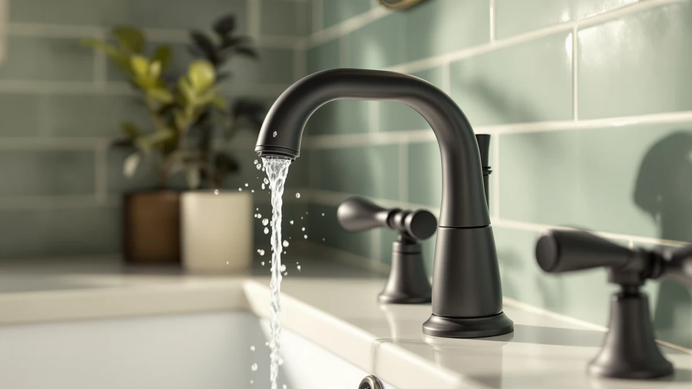

Quick Answer
We compared seven single-handle bathroom faucets across chrome, brushed nickel, and matte black finishes, from $28.99 to $94.99. The Peerless Centerset in Chrome at $38.76 is our top pick for most bathrooms thanks to its brass body, easy-clean finish, and low price. Step up to the Moen Wellton at $63.95 if you want a brushed finish that hides fingerprints.
Our pick: Peerless Centerset Bathroom Faucet Chrome at $38.76 Check Price on Amazon
Things to Know Before You Buy
- Handle style: A single lever controls hot and cold together, which speeds up temperature tweaks and keeps the deck clean. A couple of centerset models here still use two handles if you prefer separate controls.
- Hole spacing: Most of these faucets are single-hole or 4-inch centerset designs, so count the holes in your sink before you order.
- Finish: Chrome wipes clean fast and costs the least. Brushed nickel and Moen's Spot Resist coating hide water spots and fingerprints better in daily use.
- Budget: Our picks run from $28.99 to $94.99, so you can match the faucet to the room without overspending on a guest bath.
- Valve and reach: A ceramic-disc valve resists drips longer than rubber washers, and spout height matters if you wash your face under the stream.
The best bathroom faucets single handle designs give you one lever for hot and cold, a cleaner deck, and faster temperature control than a two-knob setup. We compared seven faucets across chrome, brushed nickel, and matte black finishes at prices from $28.99 to $94.99. Our favorite for most bathrooms is the Peerless Centerset in Chrome at $38.76, which pairs a familiar look with a low price and easy upkeep.
Your faucet gets touched more than almost anything else in the room, so small annoyances add up. A handle that wobbles, a finish that shows every fingerprint, or a spout that splashes will bother you every morning. We weighed how each faucet feels to use, how it handles water spots, and how simple it is to install with basic tools.
If you want a step up in finish, the Moen Wellton in Spot Resist brushed nickel at $63.95 hides smudges well. Shopping on a tight budget, you can get the Ryuwanku matte black faucet at $28.99 for a modern look that costs less. Below, we break down each pick, where it fits, and the trade-offs worth knowing before you buy.
Why You Should Trust Us
Ilane Tall has covered bathroom fixtures and home upgrades for Best Bathroom Faucets, with a focus on products that hold up in daily use rather than ones that only look good in a showroom photo. Our approach to the best bathroom faucets single handle category stays simple: we favor faucets that install cleanly, feel solid under the hand, and keep working after months of twice-daily use.
We do not run a paid lab or invent expert quotes. We compare real product specs, finishes, valve types, and owner feedback, then weigh price against what you actually get. When a faucet has a weak spot, such as a finish that spots or a short spout, we say so instead of glossing over it.
How We Picked
We started with single-handle bathroom faucets that fit standard US sinks, either single-hole or 4-inch centerset mounts, since those cover the vast majority of bathrooms. We set a price ceiling under $100 so every pick stays reasonable for a guest bath or a budget remodel.
From there we looked for solid brass or metal bodies over plastic, ceramic-disc valves that resist drips, and finishes that survive daily wiping. We also kept a couple of two-handle centerset options in the mix for readers who prefer separate hot and cold controls, and we flagged those clearly so the handle count is never a surprise.
How We Compared
We evaluated each single-handle faucet on the things you notice every day: how smoothly the lever moves, how steady the stream runs, and how the finish looks after a week of splashes and hand soap. We checked spout height and reach against a standard vanity sink, since a low spout can crowd your hands and a tall one can splash a shallow basin.
We also worked through the install steps for each model, noting whether the supply lines and mounting hardware come in the box and how fiddly the connections are under the sink. None of this involves fake scores. We report what helps or annoys a normal owner, and we call out the faucet that earned the top spot among these single-handle bathroom faucets.
Our Picks

Peerless Centerset Bathroom Faucet Chrome
What we like
- Low $38.76 price for a brass-body faucet
- Chrome finish wipes clean in seconds
- Straightforward centerset install
Flaws but not dealbreakers
- Chrome shows water spots faster than brushed finishes
- Plainer look than the matte black or nickel picks
| Material | Brass + finish |
| Size | Centerset |
The Peerless Centerset in chrome earns our top pick because it does the ordinary things well at a price that leaves room in the budget. At $38.76 you get a brass body, a bright chrome finish, and a centerset design that drops into the common three-hole sink layout. The look is classic rather than trendy, which is a plus if you want a faucet that will still fit the room in ten years.
Chrome is the easiest finish to clean, since a quick wipe removes toothpaste and soap without special products. The trade-off is that chrome shows water spots sooner than the brushed nickel picks, so you may reach for the cloth more often in a hard-water home. For a guest bath, a rental, or a main bathroom where you want reliable basics over flash, this Peerless faucet is the one we would reach for first without a second thought.

Moen Wellton Spot Resist Brushed
What we like
- Spot Resist finish hides fingerprints and water marks
- Warm brushed nickel tone suits most decor
- Moen brand support and parts availability
Flaws but not dealbreakers
- Costs more than the chrome and matte black picks
- Brushed nickel needs occasional wiping to stay even
| Material | Brass + finish |
| Size | Single-hole |
The Moen Wellton is our runner-up because it fixes the one thing chrome cannot: fingerprints. Its Spot Resist brushed nickel finish shrugs off water spots and smudges, so the faucet looks tidy longer between cleanings. At $63.95 it costs more than the Peerless, but the finish upgrade and Moen's parts network justify the jump for a main bathroom.
Brushed nickel carries a warm, soft tone that pairs with white, gray, and wood vanities alike, which makes the Wellton an easy match for most remodels. You still get a single lever for quick temperature control and a brass body underneath. The finish is not maintenance-free, and you will want to wipe it now and then to keep the sheen even, but it hides daily grime far better than a polished surface. If chrome feels too plain, this is the single-handle bathroom faucet we would step up to.

Moen Karis Spot Resist Brushed
What we like
- Same Spot Resist finish that hides smudges
- More sculpted, upscale styling
- Moen reliability and support
Flaws but not dealbreakers
- Highest price in this lineup at $94.99
- Styling is a bigger commitment than the plain picks
| Material | Brass + finish |
| Size | Single-hole |
The Moen Karis covers the same Spot Resist brushed nickel ground as the Wellton, but with dressier styling meant to anchor a nicer vanity. At $94.99 it is the priciest faucet here, so it makes the most sense when the faucet is part of the room's look rather than a background part. You still get Moen's finish that fights fingerprints and the brand's easy access to replacement parts.
The trade-off is cost and commitment. Its more sculpted shape reads as upscale, which is the point, but that also means it will feel less neutral than the Peerless if your taste changes. For a primary bathroom remodel where you want the faucet to feel like a deliberate choice, the Karis delivers a step up in presence without leaving the reliable Moen family. Shoppers watching every dollar will be happier with the Wellton or the chrome Peerless single-handle faucet.

Pull Out LED Bathroom Faucet
What we like
- Pull-out spout makes rinsing easier
- LED stream signals hot and cold at a glance
- Modern look for $59.99
Flaws but not dealbreakers
- LED is a novelty some buyers will tire of
- More moving parts than a fixed spout
| Material | Brass + finish |
| Size | Single-hole |
The KaiwayInno Pull Out LED faucet brings two features you rarely see at $59.99: a pull-out spout and a color-changing LED stream. The pull-out head lets you direct water to rinse the basin or fill a cup, which helps in a small vanity. The LED shifts color with water temperature, giving kids a clear visual cue before they reach into the stream.
Water flow powers the LED, so there are no batteries to swap, though it is a feature some adults will find gimmicky after the novelty fades. A pull-out spout also adds moving parts compared with a fixed design, so there is a bit more to keep an eye on over the years. For a children's bathroom, or anyone who wants a modern touch without paying much for it, this faucet is a genuinely useful pick rather than a gimmick.

Pfister Willa 4 inch Centerset
What we like
- Fits standard 4-inch centerset sinks
- Established Pfister brand and warranty support
- Clean, coordinated styling
Flaws but not dealbreakers
- Higher price than similar centerset picks
- Centerset layout only fits three-hole sinks
| Material | Brass + finish |
| Size | 4-inch centerset |
The Pfister Willa is a 4-inch centerset faucet built for the common three-hole sink, and it comes from a brand with a long track record in bathroom fixtures. At $82.27 it sits near the top of this group, but you get Pfister's warranty support and a coordinated look that matches the deck plate and handle as a set.
Centerset means the spout and handle mount on a single base that spans 4 inches, so measure your sink first, since it will not fit a single-hole basin. The Willa's styling is clean and neutral enough to work in most bathrooms, and the brand backing gives you a clear path for parts if something wears out. If you want a centerset single-handle faucet from a name you recognize and the price fits, the Willa is a solid pick.

Phiestina 4 Inch 2 Handle
What we like
- Low $29.99 price
- Separate handles for precise hot and cold
- Fits 4-inch centerset sinks
Flaws but not dealbreakers
- Two handles, not a single lever
- Two-knob control is slower for quick temperature changes
| Material | Brass + finish |
| Size | 4-inch centerset |
The Phiestina is the one two-handle faucet in this roundup, and we kept it in because plenty of readers still prefer separate hot and cold controls. At $29.99 it is among the cheapest options here, and it fits the standard 4-inch centerset layout. Two handles let you dial in exact hot and cold settings, which some people find more precise than a single lever.
The obvious caveat is the handle count. If you came here specifically for a one-lever design, this is a two-handle faucet, and adjusting temperature means turning two knobs instead of nudging one. For a guest bath, a laundry sink, or anyone who grew up with two-handle faucets and wants to keep that feel, the Phiestina gives you a lot of hardware for the price. We flag it plainly so the two-handle setup is never a surprise at install.

Ryuwanku Bathroom Faucet Matte Black
What we like
- Lowest price in the lineup at $28.99
- On-trend matte black finish
- Single-lever control
Flaws but not dealbreakers
- Short spout limits reach over the basin
- Budget build feels less solid than the Moen picks
| Material | Brass + finish |
| Size | Short spout |
The Ryuwanku matte black faucet is the cheapest pick here at $28.99, and it lands the modern matte black look that usually costs more. The single lever keeps temperature control quick, and the dark finish hides water spots better than chrome while giving a small bathroom a current, styled feel.
This is a short-spout design, so reach over the basin is limited, and taller users may find it cramped for washing their face. The build feels lighter than the Moen faucets, which you would expect at this price. For a powder room refresh, a rental upgrade, or a second bathroom where you want the matte black look without spending much, this faucet gets you there for very little money.
Quick Comparison
| Product | Material | Price | Rating | Best for | Get it |
|---|---|---|---|---|---|
| Peerless Centerset Bathroom Faucet Chrome | Brass + finish | $38.76 | 4 | Everyday bathrooms on a budget | View on Amazon → |
| Moen Wellton Spot Resist Brushed | Brass + finish | $63.95 | 4 | Main baths wanting a smudge-hiding finish | View on Amazon → |
| Moen Karis Spot Resist Brushed | Brass + finish | $94.99 | 4 | Upscale vanities and remodels | View on Amazon → |
| Pull Out LED Bathroom Faucet | Brass + finish | $59.99 | 4 | Kids' baths and novelty seekers | View on Amazon → |
| Pfister Willa 4 inch Centerset | Brass + finish | $82.27 | 4 | Three-hole centerset sinks | View on Amazon → |
| Phiestina 4 Inch 2 Handle | Brass + finish | $29.99 | 4 | Fans of two-handle control | View on Amazon → |
| Ryuwanku Bathroom Faucet Matte Black | Brass + finish | $28.99 | 4 | Budget matte black refreshes | View on Amazon → |
The Competition
We considered pricier designer faucets and no-name imports before settling on these seven single-handle bathroom faucets. Very cheap listings under $25 often use plastic bodies and rubber-washer valves that start dripping within a year, so we left those out. At the other end, faucets above $150 add sculptural shapes and matching accessories, but they push past the value line we set for this guide.
Touchless and widespread faucets came up too. Touchless models add sensors and a battery or wiring step that many bathrooms do not need, and widespread designs require an 8-inch three-hole layout that most standard vanities do not have. Those are worth a look if your sink and budget fit, but they sit outside the single-hole and centerset picks we focused on.
After weighing finish, valve quality, install, and price, the Peerless Centerset in Chrome is the best single-handle bathroom faucet for most people, with the Moen Wellton close behind when you want a smudge-hiding brushed finish.